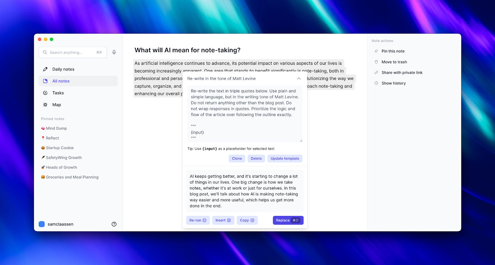
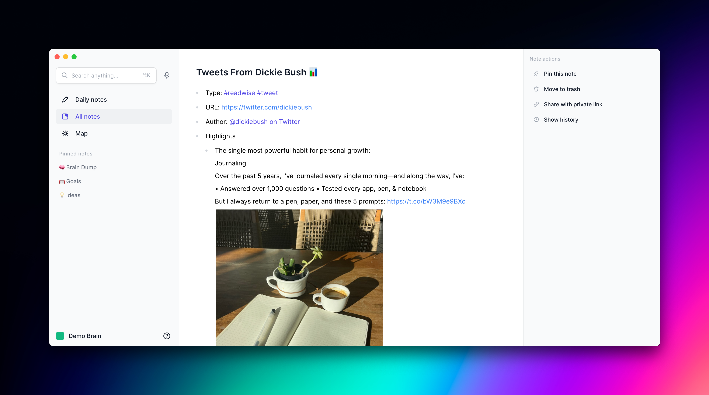
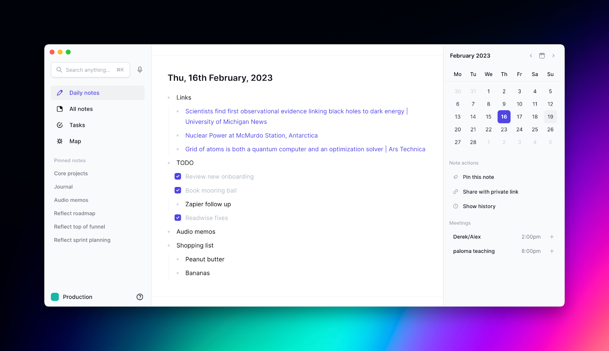
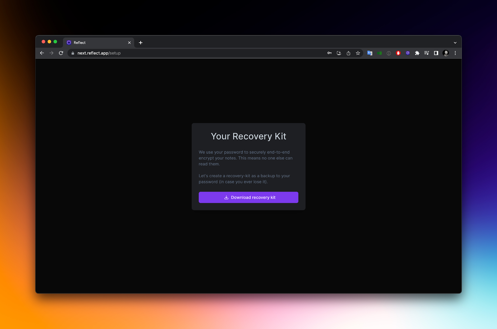
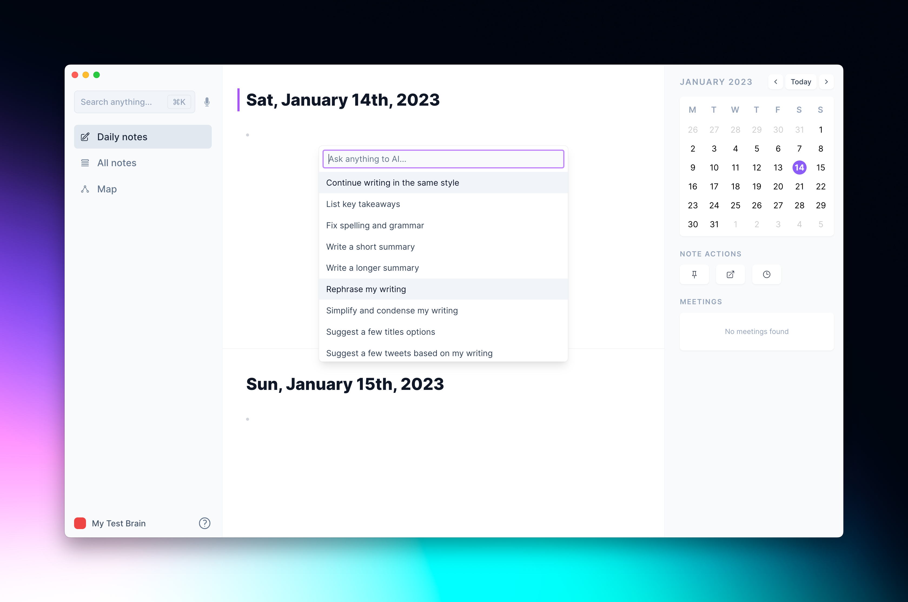
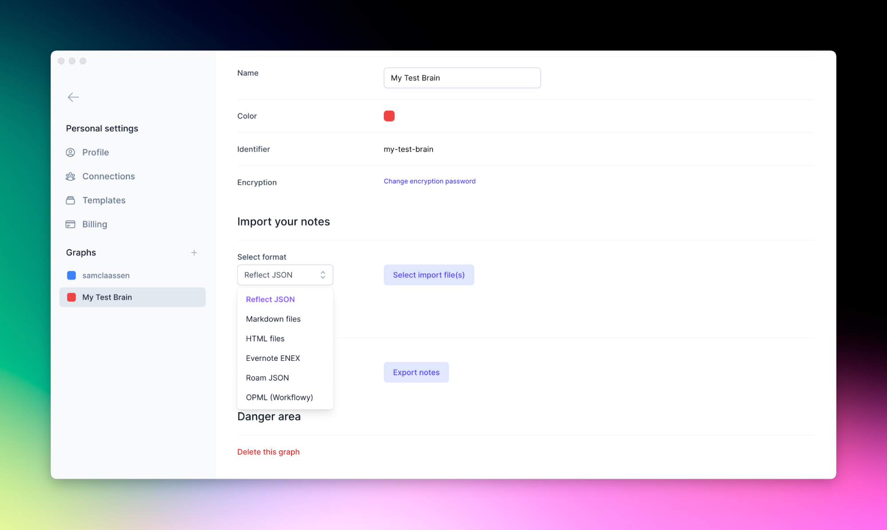
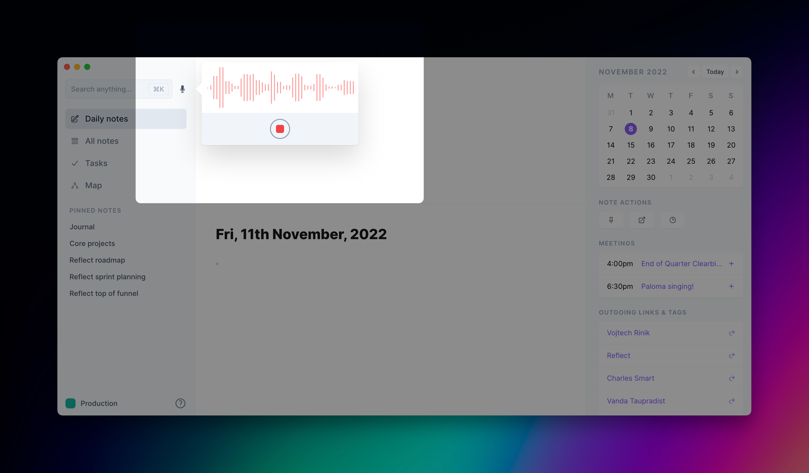
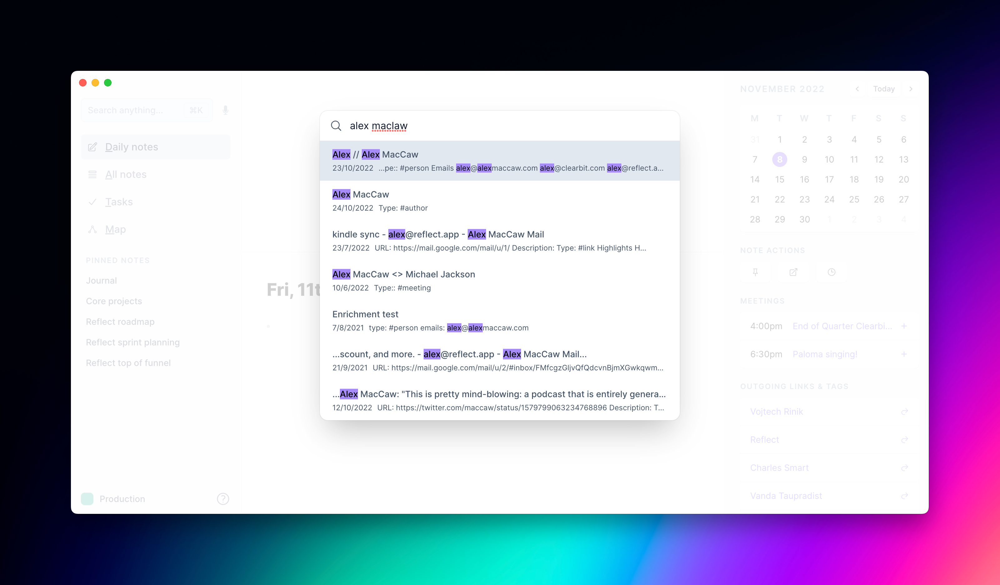

Changelog
New updates and improvements to Reflect.
GPT-4 + custom AI prompts
Reflect AI now operates using GPT-4 from OpenAI.
This newer version of GPT is significantly more creative and intelligent. You can use it to rephrase text like any author, use it to edit your writing and much more.
In this update we also added the ability to view the prompts our team has pre-built. You can then clone, edit and save your own custom prompts to quickly call up in the future.
To access Reflect AI with GPT-4, just call on the AI palette like normal using cmd j or clicking the stars icon after highlighting some text.
You can see a video walkthrough of how to create your own custom prompts here.
Readwise Integration
Reflect now has an integration with Readwise – a tool that lets you save things you find online, then resurfaces those highlights at set intervals so you don't forget about them. By integrating Readwise with Reflect, all of this happens directly in your notes.
With it, you can do things like sync your bookmarked Tweets with Reflect, import all of your Kindle or Apple Books highlights, discover and save podcast highlights and gather insert text from physical books. It will also resurface these highlights directly within your notes.
If you don’t have an account yet, you can sign up for a free trial and start syncing your reading notes with the applications you use.
Re-design of web and desktop apps
Reflect has received a major design makeover on the web and desktop applications. The whole app got refreshed, from the daily notes page to the settings.
Here are some highlights:
- A new set of icons
- Re-designed dark mode
- Simplified side-bars with more descriptive labels
- Redesigned recorder for Whisper transcriptions
The new design is live on the desktop app, and on reflect.app.
Re-design of web and desktop apps
Reflect has received a major design makeover on the web and desktop applications. The whole app got refreshed, from the daily notes page to the settings.
Here are some highlights:
- A new set of icons
- Re-designed dark mode
- Simplified side-bars with more descriptive labels
- Redesigned recorder for Whisper transcriptions
The new design is live on the desktop app, and on reflect.app.
Reflect AI integration
You can now use AI to take better notes and improve your writing.
The AI palette comes with a handful of pre-written prompts, and you can also ask anything you want with a custom prompt.
Pull up the AI palette at anytime by pressing 'cmd j' (or 'control j' on Windows). You can also edit existing text by highlighting it and using the same keyboard shortcut, or selecting the magic wand in the text-selection menu.
For more information see our Reflect academy page.
New Import/Export options
We've added the ability to import Evernote, HTML, Workflowy, Markdown, and Apple Notes.
We've also added the ability to export as HTML (alongside our Markdown and JSON export options).
For more information, see our academy.
Happy New Year! 🎆
New API endpoints, speed and Whisper improvements
- Improve the formatting of lists copied to the clipboard
- New Zapier append-to-daily-note API.
- Improve speed of first page load
- Improve Whisper transcriptions, specifically the output formatting and spelling of names.
Enhanced search and Whisper integration
Today we are releasing the desktop integration of OpenAI's Whisper. This provides close to human-level transcription support.
Simply tap the microphone icon, and record a message. Your audio will be transcribed and appended to today's daily note.
Later this year we will be adding the technology to our mobile app.
Enhanced search
We are also releasing an improved search engine. Not only did we speed things up, but we added both prefix and fuzzy matching.
Give it a whirl with 'cmd+k'
Sign in/up with
— or continue with —